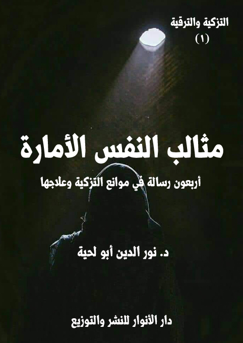
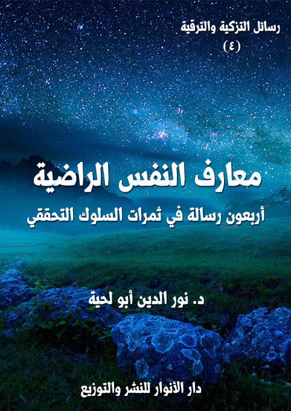
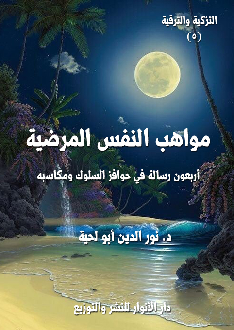

الوصف: أربعون رسالة في موانع التزكية وعلاجها
السلسلة: رسائل التزكية والترقية
المؤلف: أ.د. نور الدين أبو لحية
الناشر: دار الأنوار للنشر والتوزيع
الطبعة: الأولى، 1440 هـ
عدد الصفحات: 618
للمطالعة: هنا
لمطالعة الكتاب من تطبيق مؤلفاتي المجاني وهو أحسن وأيسر: هنا

التعريف بالكتاب
يحاول هذا الكتاب التعريف بالعيوب والمثالب المشكلة للنفس الأمارة، ومنابعها التي تنبع منها، والثمار التي تثمرها، مع بيان كيفية التخلص منها، إما باستعمال الأدوية المعرفية، أو أنواع الممارسات العملية.
وقد حاولنا أن نصيغ فيه كل ما ذكر في كتب الأخلاق والتصوف والسلوك من معارف مرتبطة بهذه الجوانب، مع الابتعاد عن كل ما لا علاقة بها، أو ما نرى أنه من الدخن الذي أصاب هذه العلوم، مثل غيرها من العلوم.
ولذلك كان اعتمادنا في التعرف على مظاهر تلك المثالب ومنابعها وكيفية علاجها على المصادر المقدسة بالدرجة الأولى، باعتبارها المصدر الأول للتزكية، سواء من ناحية التعريف بها، أو بيان منابعها وثمارها، أو بيان كيفية علاجها والتخلص منها.
ولضرورة التبسيط والتوضيح، جعلناه على شكل رسائل يرسلها شيخ مرشد مرب إلى مريده الذي يطلب منه أن يعرفه بالمثالب المشكلة للنفس الأمارة، وكيفية علاجها، مع سؤاله عن بعض أسرار النصوص المقدسة المرتبطة بها.
وقد أرسل له في هذا الكتاب أربعين رسالة تشمل جميع الجوانب المرتبطة بذلك، وتشرح له كل ما يتعلق بها من معارف يحتاجها لذلك.
الكتاب: مدارس النفس اللوامة
الوصف: أربعون رسالة في مناهج التزكية ومدارسها
السلسلة: رسائل التزكية والترقية
المؤلف: أ.د. نور الدين أبو لحية
الناشر: دار الأنوار للنشر والتوزيع
الطبعة: الأولى، 1441 هـ
عدد الصفحات: 654
للمطالعة: هنا
لمطالعة الكتاب من تطبيق مؤلفاتي المجاني وهو أحسن وأيسر: هنا
التعريف بالكتاب
النفس اللوامة هي النفس التي تقع في المرتبة الثانية بعد النفس الأمارة، لتحضر صاحبها لأن تتحول نفسه إلى نفس مطمئنة..
ودورها بذلك محدود ومؤقت، ويمكن تحديده في جانبين، أو وظيفتين:
أولاهما: تزكية النفس وتهذيبها من كل مثالب النفس الأمارة، ذلك أنه لا يمكن أن تبنى الأخلاق الطيبة إلا بعد اجتثاث ما يخالفها من الأخلاق الخبيثة.
وثانيها: ترقية النفس إلى المحال التي تطمئن فيها للإيمان، لتصبح بذلك أهلا لدرجة النفس المطمئنة.
وهذان الدوران يحتاجان إلى التعرف على المناهج الصحيحة التي يمكن أن تسير بالنفس سيرا صحيحا، حتى لا ينحرف بها صاحبها في الوقت الذي يريد فيه تهذيبها والرقي بها.
ولذلك حاولنا في هذه الرسائل أن نذكر المناهج التي يمكن أن تقوم بذينك الدورين، مع بيان أدلتها الشرعية، والأخطاء التي تسربت إليها، وحالت بينها وبين أداء أدوارها الصحيحة.
الكتاب: منازل النفس المطمئنة
الوصف: أربعون رسالة في مراتب السلوك التخلقي
السلسلة: رسائل التزكية والترقية
المؤلف: أ.د. نور الدين أبو لحية
الناشر: دار الأنوار للنشر والتوزيع
الطبعة: الأولى، 1441 هـ
عدد الصفحات: 450
للمطالعة: هنا
لمطالعة الكتاب من تطبيق مؤلفاتي المجاني وهو أحسن وأيسر: هنا

التعريف بالكتاب
يحاول هذا الكتاب التعرف على الخصال والمكارم التي تتصف بها النفس المطمئنة، والتي جرى التعبير عنها في الكتب المختصة بهذا الجانب بالمنازل والمقامات والأحوال، لأن النفس تنزل فيها، وتقيم عندها، وتتحلى بها، وتظهر علاماتها عليها.
وقد اخترنا منها أربعين صفة تجمع أكثر أو كل ما ذكره العلماء في منازل السائرين، وما يظهر أنه زائد عليها هو في الحقيقة مندرج ضمن بعضها.
وقد حاولنا ربط المعارف والقيم المتعلقة بهذا الجانب بالمصادر المقدسة من الكتاب والسنة، وما روي عن أئمة الهدى مما يؤكد ذلك، أو يفصله أو يبين كيفية تنفيذه، أو يساعد عليها.
كما أنا انتقينا من كلام العلماء والحكماء ما رأيناه متوافقا مع تلك المصادر.. ونبهنا إلى الدخن الموجود في بعضها حتى لا تتحول التزكية عن مقصودها الشرعي.
وكما تعودنا في هذه السلسلة من مزج الحقائق العلمية بالمواعظ والرقائق؛ فقد انتقينا ما نراه مناسبا لذلك من خلال حديث الشيخ مع مريده الصادق، ووصيته ونصحه له كل حين.
الكتاب: معارف النفس الراضية
الوصف: أربعون رسالة في ثمرات السلوك التحققي
السلسلة: رسائل التزكية والترقية
المؤلف: أ.د. نور الدين أبو لحية
الناشر: دار الأنوار للنشر والتوزيع
الطبعة: الأولى، 1441 هـ
عدد الصفحات: 423
للمطالعة: هنا
لمطالعة الكتاب من تطبيق مؤلفاتي المجاني وهو أحسن وأيسر: هنا

التعريف بالكتاب
يحاول هذا الكتاب البحث عن المعارف الكبرى للنفس المطمئنة، والتي تجعلها موصوفة بالرضى، كما قال تعالى: {ارْجِعِي إلى رَبِّكِ رَاضِيَةً} [الفجر: 28]، وقد ركزنا فيه خصوصا على أمرين:
1 ـ تطهير تلك المعارف مما علق بها من الدخن الذي أصاب كتب التزكية والسلوك، بحيث اختلطت معارفها المستنبطة من المصادر المقدسة بغيرها من المصادر الأجنبية: إما ذات التوجه العقلي، كالفلسفة بمدارسها المختلفة، أو ذات التوجه الإشراقي والغنوصي، والذي قد يظهر في صورة كشف أو شهود أو إلهام.
2 ـ بيان علاقة تلك المعارف بالرضا والسكينة والطمأنينة، وهو مما يدخل في أبواب المقاصد العقدية، والتي لا تكتفي فقط بتقرير الحقائق الإيمانية، ولا البرهنة عليها مثلما يفعل المتكلمون، وإنما تضيف إليها أبعادها وآثارها النفسية، وعلاقتها بالسلوك والتزكية والتربية.
ذلك أن المعارف الإيمانية لا يقتصر أثرها على تعريف المؤمن بحقائق الوجود، وإنما يتعداه إلى تأثيره في السلوك، ولذلك كان من علامات صدق الإيمان رقي السلوك.
الكتاب: مواهب النفس المرضية
الوصف: أربعون رسالة في حوافز السلوك ومكاسبه
السلسلة: رسائل التزكية والترقية
المؤلف: أ.د. نور الدين أبو لحية
الناشر: دار الأنوار للنشر والتوزيع
الطبعة: الأولى، 1441 هـ
عدد الصفحات: 270
للمطالعة: هنا
لمطالعة الكتاب من تطبيق مؤلفاتي المجاني وهو أحسن وأيسر: هنا

التعريف بالكتاب
يحاول هذا الكتاب ذكر ما ورد في النصوص المقدسة من مواهب الله تعالى للصالحين الذين جاهدوا نفوسهم في ذات الله إلى أن استقامت لهم، وصلحت، وصارت محلا لكل أنواع الكرامة والفضل.
وذلك لتحفيز السائرين والسالكين إلى الله بما يعينهم على المجاهدات التي يتطلبها السلوك، وهو منهج قرآني ونبوي في استعمال الترغيب والترهيب كوسائل للتزكية والترقية.
وقد جمعنا فيه كل أصناف الترغيبات الإلهية سواء تلك التي توصف بكونها معنوية وروحية، أو تلك التي توصف بكونها حسية ومرتبطة بالرغبات والغرائز البشرية.
ذلك أن الله تعالى رب الحس والمعنى، والظاهر والباطن، وقد استعمل كليهما في ترغيب عباده في السير إليه، ولو خالفنا ذلك، أو احترقنا بعض ما ذكره، نكون من المبدلين والمغيرين.
وهو ما حصل للأسف في التراث الإسلامي المرتبط بهذه الجوانب، حيث احتقر بعضهم ـ بسبب فهمه الخاطئ لما ورد في الإخلاص والتجريد ـ كل ذلك النعيم الحسي الذي رغب الله تعالى فيه عباده، مع كونه مذكورا في القرآن الكريم، ولجميع الصالحين سواء كانوا من المقربين أو غيرهم.
وهذا خلاف المنهج القرآني، وخلاف ما تقتضيه الفطرة السليمة؛ ففرق كبير بين أن نعبد الله لله، {مُخْلِصِينَ لَهُ الدِّينَ} [الأعراف: 29]، وبين أن نطمع في فضله وكرمه وجوده الحسي والمعنوي.